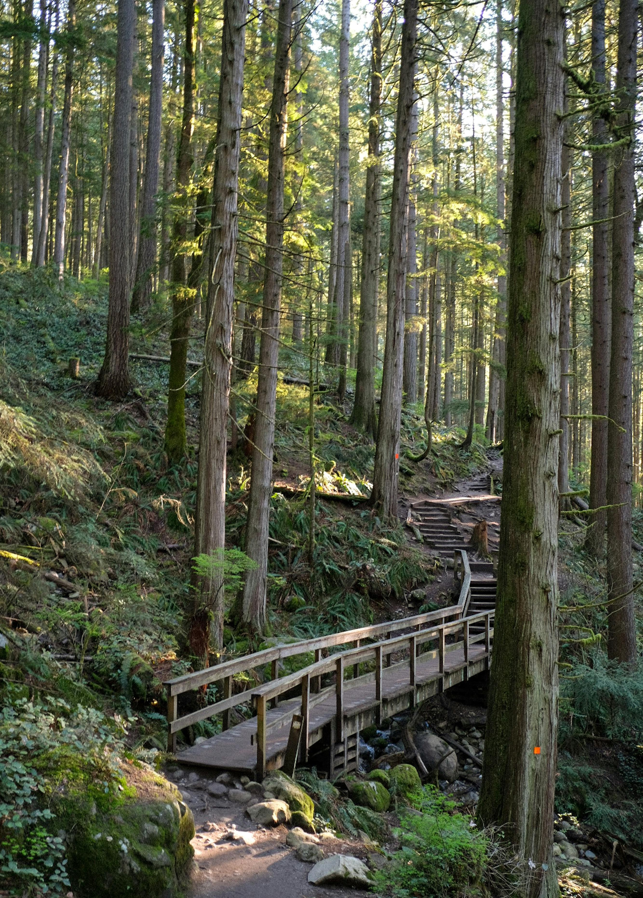

About This Website
This website is about hiking trails and wildlife in Vancouver.
Popular Vancouver Hikes
Vancouver has many beautiful hiking trails with forests, mountains, waterfalls, and amazing views. These trails are popular for exercise, sightseeing, and enjoying nature.

The Grouse Grind is one of Vancouver's most famous hiking trails. It is a steep forest trail that challenges hikers and leads to beautiful mountain views.
Popular Trails
- Grouse Grind
- Quarry Rock
- Stawamus Chief
- Joffre Lakes
Photo source: Photo from Pexels
Why I Chose This Topic
I chose Vancouver hikes and wildlife because I enjoy spending time outdoors and exploring nature. Vancouver is known for its beautiful forests, mountains, lakes, and wildlife. This website shares some of the places and animals that make the area unique.
Bald Eagles of British Columbia
The bald eagle is one of the most recognizable birds in British Columbia. These powerful birds can often be seen near rivers, coastlines, and forests around Vancouver. Bald eagles are known for their impressive wingspan, sharp eyesight, and important role in the local ecosystem.

Photo Source: Visit Pexels
Featured Vancouver Adventure
One of my favourite outdoor adventures near Vancouver is visiting mountain trails and viewpoints. These locations offer incredible scenery, fresh air, and opportunities to see local wildlife.